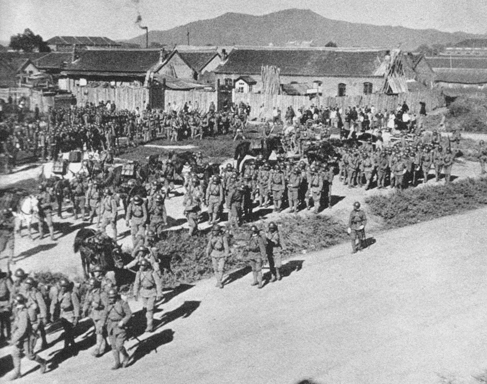
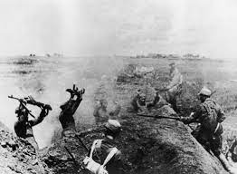

The People's Republic of China was established on October 1, 1949, by Chinese Communist leader Mao Zedong (PRC). The announcement brought an end to the costly full-scale civil war between the Chinese Communist Party (CCP) and the Nationalist Party, or Kuomintang (KMT), which erupted immediately after World War II and had been preceded by intermittent conflict between the two sides since the 1920s. The establishment of the PRC also completed the long process of governmental upheaval in China that had begun with the 1911 Chinese Revolution. Following the "fall" of mainland China to communism in 1949, the US suspended diplomatic relations with the PRC for decades.
 Following the Japanese invasion of Manchuria in 1931, the Government of the Republic of China (ROC) faced a triple threat: Japanese invasion, Communist uprising, and warlord insurgency. Frustrated by Nationalist leader Chiang Kai-shek's focus on internal threats rather than the Japanese attack, a group of generals kidnapped Chiang in 1937 and forced him to reconsider cooperation with the Communist army. This Second United Front, like the first effort at cooperation between the Nationalist government and the CCP, was short-lived. Rather than focusing solely on Japan, the Nationalists expended necessary resources to contain the Communists, while the Communists worked to strengthen their influence in rural society.
During WWII, popular support for the Communists grew. Officials from the United States in China reported dictatorial repression of dissent in Nationalist-controlled areas. These undemocratic policies, combined with wartime corruption, exposed the Republic of China Government to the Communist threat. The CCP, for its part, had early success with land reform and was praised by peasants for its unwavering efforts to fight the Japanese invaders.
The surrender of the Japanese set the stage for the resurgence of civil war in China. Though only nominally democratic, Chiang Kai-shek's Nationalist Government continued to receive US support as both a former war ally and the only option for preventing Communist control of China. Tens of thousands of Nationalist Chinese troops were flown into Japanese-controlled territory and allowed to accept the Japanese surrender. Meanwhile, the Soviet Union occupied Manchuria and remained there until Chinese Communist forces arrived to claim the territory.
 Chiang Kai-shek and Mao Zedong, leaders of the Nationalist and Communist parties, met in 1945 for a series of talks on the formation of a post-war government. Both agreed that democracy, a unified military, and equality for all Chinese political parties were critical. The truce was shaky, and despite repeated efforts by US General George Marshall to broker an agreement, the two sides were fighting an all-out civil war by 1946. Efforts to form a coalition government were thwarted by years of mistrust between the two sides.
From 1947 to 1949, as the civil war grew stronger, Communist victory seemed more and more likely. Despite the fact that the Communists did not control any major cities after WWII, they had widespread grassroots support, superior military organization and morale, and large stocks of weapons seized from Japanese supplies in Manchuria. Years of nepotism and corruption had eroded popular support for the Nationalist Government. Early in 1947, the ROC Government was considering Taiwan, an island province off the coast of Fujian Province, as a possible retreat. Although officials in the Truman Administration were skeptical of the strategic importance of maintaining relations with Nationalist China, no one in the US government wanted to be accused of facilitating China's "loss" to communism. Military and financial assistance to the floundering Nationalists continued, albeit at a lower level than Chiang Kai-shek would have preferred. Mao Zedong declared the establishment of the People's Republic of China (PRC) in October 1949, following a string of military victories; Chiang and his forces fled to Taiwan to regroup and plan their efforts to retake the mainland.
Domestic politics and global tensions hampered the ability of the PRC and the US to find common ground following the establishment of the new Chinese state. The Truman administration issued the "China White Paper" in August 1949, explaining previous US policy toward China based on the principle that only Chinese forces could determine the outcome of their civil war. Unfortunately for Truman, this move did not shield his administration from accusations of having "lost" China. The unfinished nature of the revolution, which left a broken and exiled but still vocal Nationalist Government and Army on Taiwan, only heightened anti-communist sentiment in the United States. The outbreak of the Korean War, which pitted the PRC and the US on opposing sides of an international conflict, effectively ended any possibility of accommodation between the PRC and the US. Truman's desire to keep the Korean War from spreading south led to the United States' policy of defending the Chiang Kai-shek government on Taiwan.
For more than two decades following the 1949 Chinese revolution, there were few contacts, limited trade, and no diplomatic ties between the two countries. Until the 1970s, the US continued to recognize the Republic of China, which was based on Taiwan, as China's true government and supported that government's claim to the Chinese seat at the United Nations.